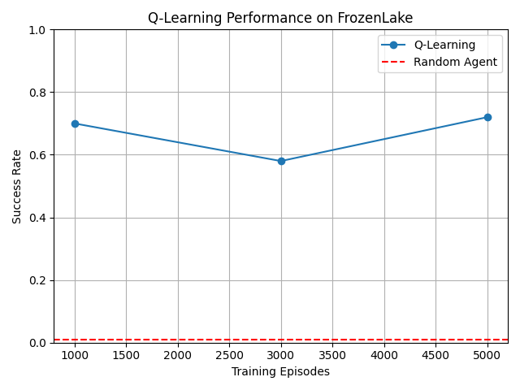
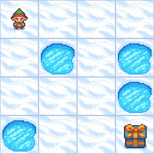

Teach an Agent to Learn
Training an agent to cross a slippery frozen lake. Using Gymnasium and Q-learning, I compared random actions with a learned strategy and recorded the agent reaching the goal.
How it works
FrozenLake is a 4×4 grid with frozen tiles, holes, and a goal. The agent receives a reward of 1 for reaching the goal and 0 otherwise. Because the surface is slippery, its movement can differ from the action it chooses.
The agent stores action values in a Q-table. During training, it explores with random actions and updates these values using rewards and estimated future returns. During evaluation, it selects the highest-valued action without further learning.
Experiments & results
I changed only the number of training episodes. Alpha stayed at 0.8, gamma at 0.95, initial epsilon at 1.0, epsilon decay at 0.995, and minimum epsilon at 0.01.
| Experiment | Training episodes | Success rate |
|---|---|---|
| Random agent | — | 1% |
| Experiment 1 | 1,000 | 70% |
| Experiment 2 | 3,000 | 58% |
| Experiment 3 | 5,000 | 72% |
The random agent's average reward was 0.01. The later 73% result came from another 5,000-episode training run and is separate from the three experiments above.
Performance comparison

The graph could not be loaded. Check that results/learning_curve.png exists in the published site.
The learned agent

The GIF could not be loaded. Check that results/learned_agent.gif exists in the published site.
What the results show
All three trained agents performed better than the random baseline. However, more training did not improve every run: the 3,000-episode experiment scored lower than the 1,000-episode experiment. Exploration and slippery movement introduce randomness, so repeated experiments with multiple seeds would give a more reliable comparison.
Project files & documentation
The README contains the environment explanation, algorithm, experiment analysis, personal reflections, AI Usage section, and the final question.